空间天气监测，预报类网站
返回上一页面
空间天气监测，预报类网站
部分网站打开时间可能较长，如遇链接失效，请立即发送邮件通知我，感激不尽！
国家空间天气预警监测中心
请注意，此网站加载时间较长
点我前往~~
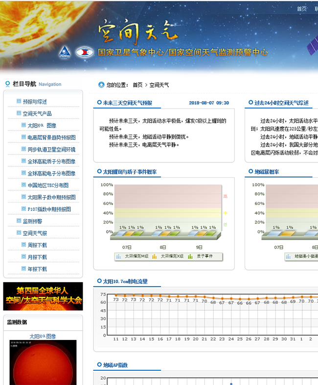
空间环境预报中心
点我前往~~
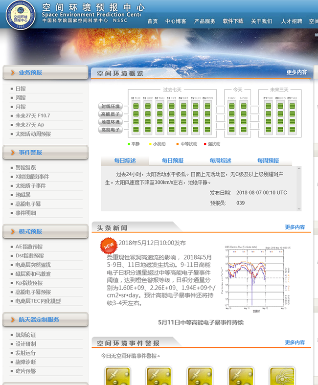
SOHO(Solar and Heliospheric Observatory)
太阳和日球层探测器
点我前往~~
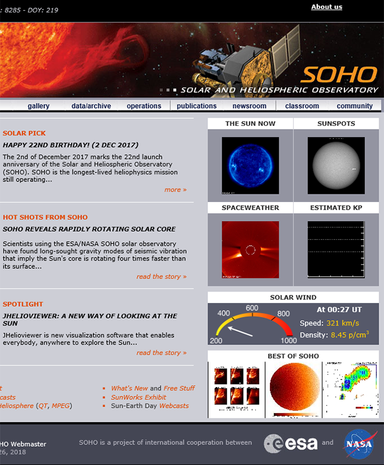
NOAA space weather prediction center
美国海洋与大气管理局空间天气预测中心
请注意，此网站加载时间较长
点我前往~~
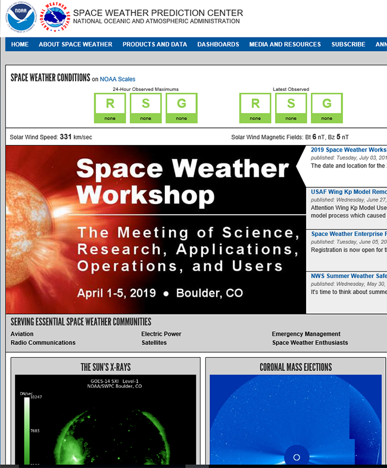
IRIS(Interface region imaging spectrograph)
太阳过渡层成像光谱仪
请注意，此网站加载时间较长
点我前往~~
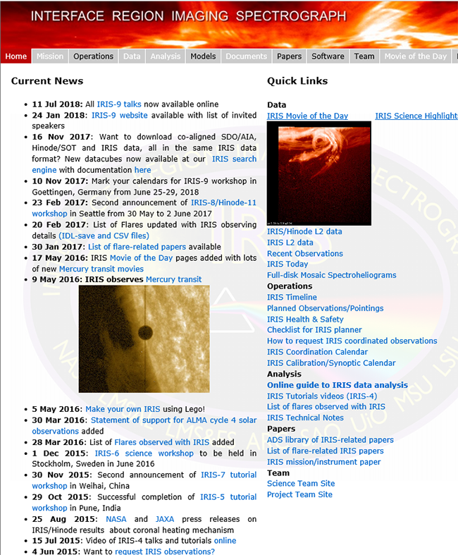
STEREO(Solar Terrestrial Relations Observatory)
日地关系观测台
点我前往~~
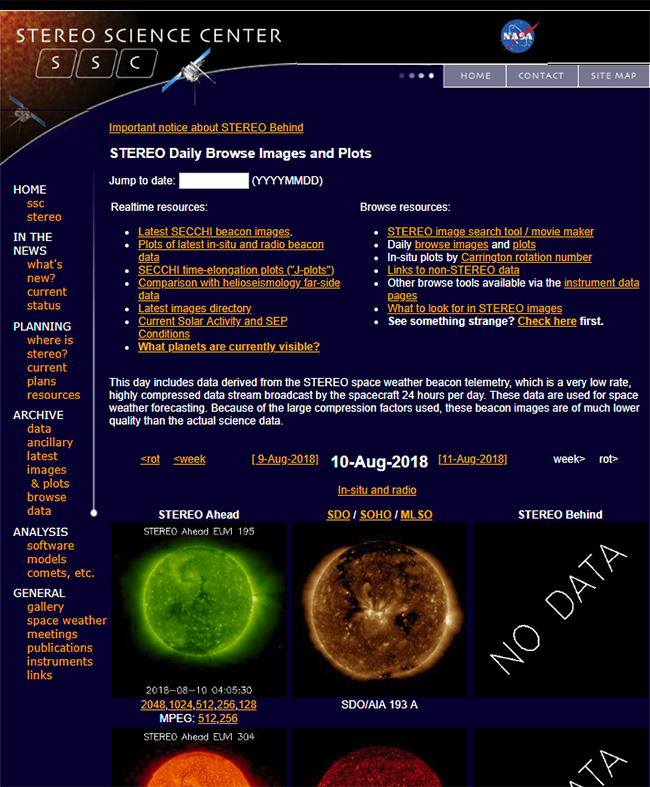
ACE(Solar Terrestrial Relations Observatory)
要素和同位素成份高级探测器
点我前往~~
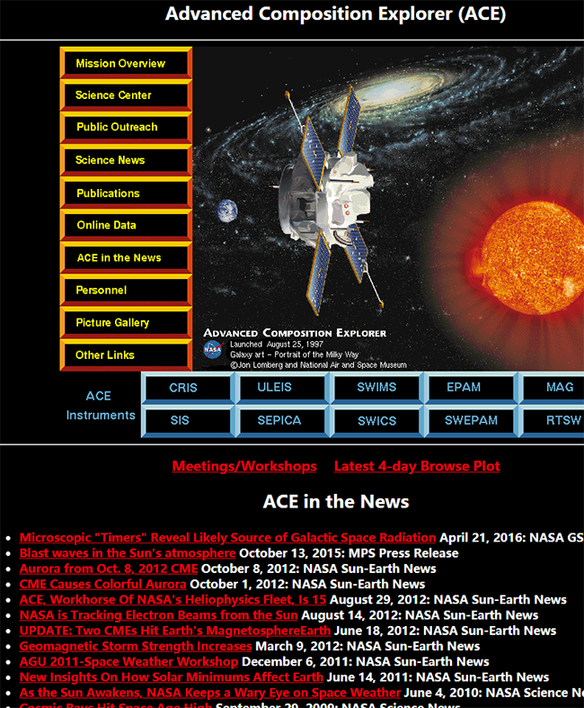
TRACE (Transition Region and Coronal Explorer)
太阳过渡区与日冕探测器
点我前往~~
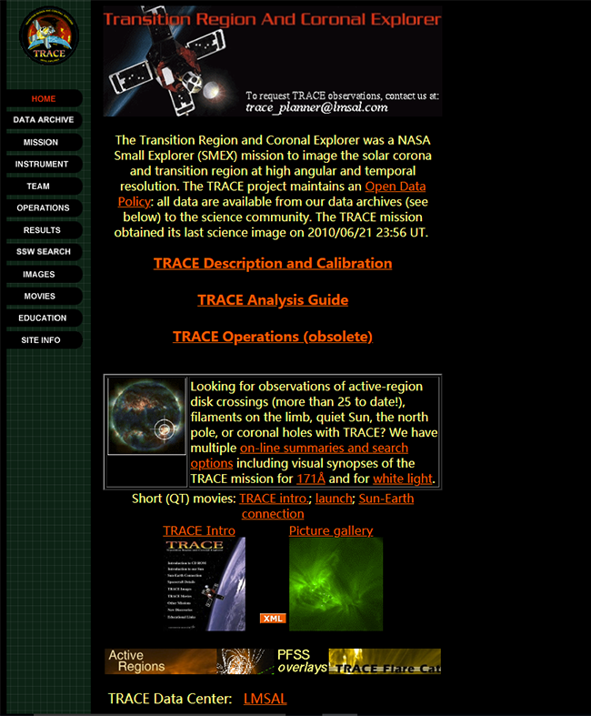
SDO(Solar Dynamics Observatory)
太阳动力学天文台
点我前往~~
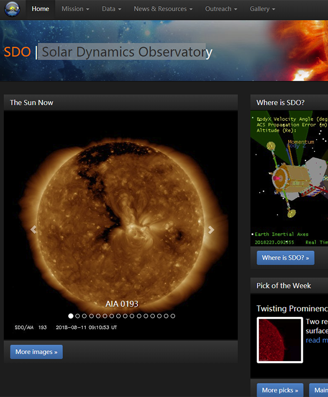
DSCOVR(Deep Space Climate Observatory)
深空气象观测台
点我前往~~
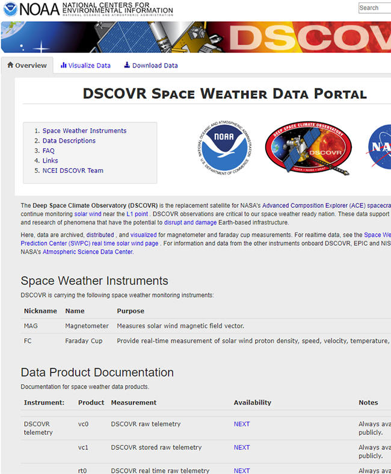
Parker Solar Probe(帕克太阳探测器）
人类有史以来最接近太阳的任务
由于需要七年时间入轨，暂无相关数据
点我前往~~
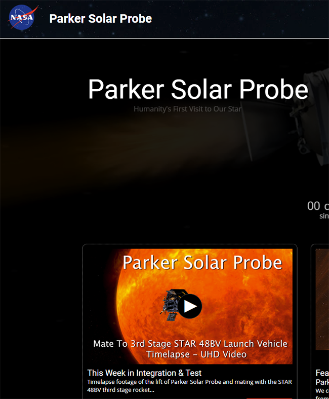
暂未添加